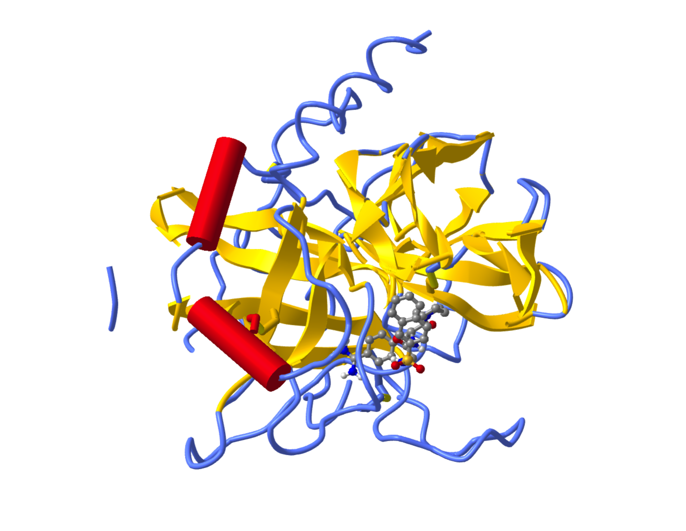
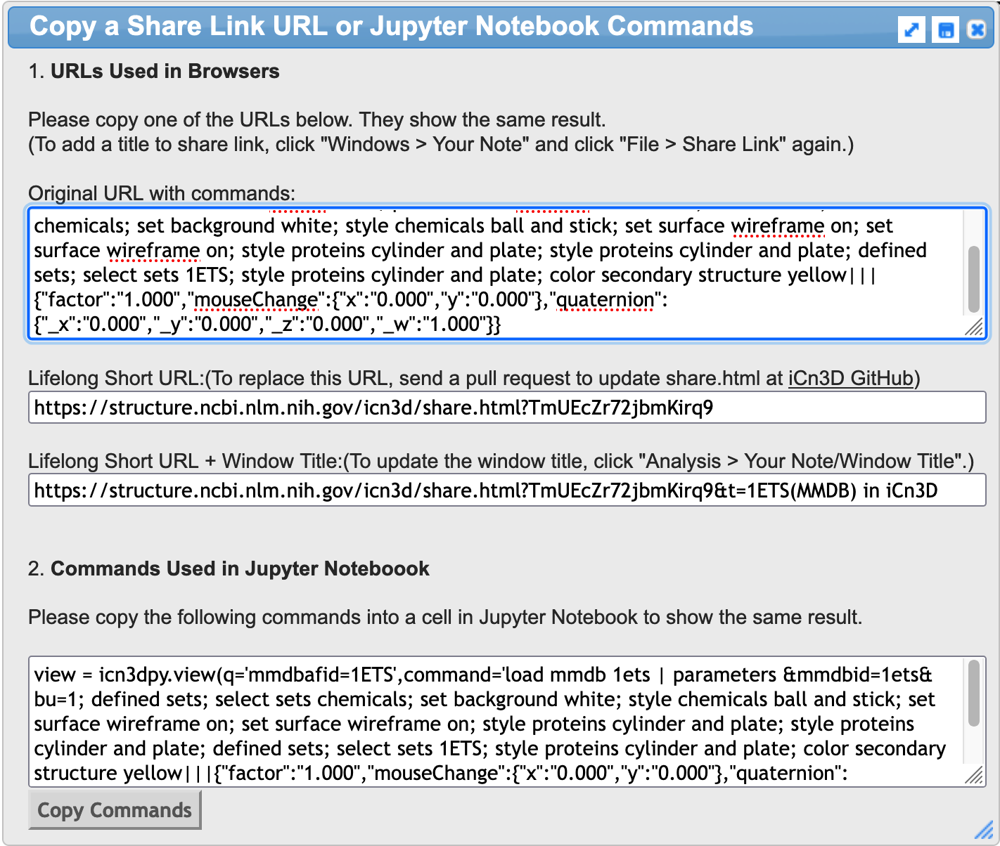

Molecular Visualization with iCN3D#
Overview#
Questions#
How do you incorporate iCN3D into a Jupyter Notebook?
How do you view structures from PDB files in iCN3D?
How do you superimpose structures in iCN3D in a Jupyter Notebook?
How can you control the renderings of features of a protein in iCN3D?
Objectives#
Learn to load the iCN3D app
Identify controls that are available within the iCN3D window in a Jupyter Notebook
Implement commands captured from an iCN3D web page in a Jupyter notebook.
iCN3D and Molecular Visualization#
iCN3D is a molecular viewer that is provided by the National Center for Biotechnology Information and integrated into many of their web pages. Here is a link that enables you to open an iCN3D web page and load a PDB structure of interest. In fact, Henry Jakubowski has created an extensive collection of iCN3D web pages to support his Biochemistry textbook offered through Libretext.
Loading the iCN3D library#
As we have seen previously, the import command is used to load iCN3D into your Jupyter notebook. Be careful to use the exact name of the library, all in lower case letters.
import icn3dpy
---------------------------------------------------------------------------
ModuleNotFoundError Traceback (most recent call last)
Cell In[1], line 1
----> 1 import icn3dpy
ModuleNotFoundError: No module named 'icn3dpy'
Viewing a PDB structure#
As a first step, we will simply load a PDB structure in the default representation provided when you use the icn3dpy.view command for Jupyter notebooks. Please note that you can substitute in any structure id of interest using the format ‘pdbid = xxxx’. If you have a favorite structure, use that instead of 1a0j.
scene = icn3dpy.view(q='pdbid=1a0j')
scene
You appear to be running in JupyterLab (or JavaScript failed to load for some other reason). You need to install the extension:
jupyter labextension install jupyterlab_3dmol
<icn3dpy.view at 0x7ff070525070>
Applying the power of python#
The above approach offers no real advantages over simply using an iCN3D web page to view your structure, so we are going to create some variables and functions that will enable you to quickly generate your desired views of many different PDB entries using simple commands. Let’s start with variables. The icn3dpy.view() command requires the definition of a variable q in the statement. In this example, the string pdbid=1a0j is assigned to the variable q.
view = icn3dpy.view(q='pdbid=1a0j')
view
This can be replaced with another variable that contains the string. Let’s try that.
# Replacing the 'pdbid=1a0j' string with a variable
ID = 'pdbid=8gch'
scene = icn3dpy.view(q=ID)
scene
You appear to be running in JupyterLab (or JavaScript failed to load for some other reason). You need to install the extension:
jupyter labextension install jupyterlab_3dmol
<icn3dpy.view at 0x7ff070525c40>
Adding commands to the icn3dpy.view function#
It is possible to add commands to the icn3dpy.view function to create a different view. You can find a list of commands on the iCN3D menuicon page. Let’s consider a few examples and then explore additional ways to control them.
# Adding this command string with the syntax shown to change the appearance
# of the protein from strands to cylinder and plate
scene = icn3dpy.view(q='pdbid=1mbo', command = 'style proteins cylinder and plate')
scene
You appear to be running in JupyterLab (or JavaScript failed to load for some other reason). You need to install the extension:
jupyter labextension install jupyterlab_3dmol
<icn3dpy.view at 0x7ff070525190>
# Change the heme group to ball and stick
scene = icn3dpy.view(q='pdbid=1mbo', command = 'style proteins cylinder and plate; style chemicals ball and stick')
scene
You appear to be running in JupyterLab (or JavaScript failed to load for some other reason). You need to install the extension:
jupyter labextension install jupyterlab_3dmol
<icn3dpy.view at 0x7ff070525430>
# Assigning command strings to variables
ID = 'pdbid=1mbo'
cpl = '; style proteins cylinder and plate'
bns = '; style chemicals ball and stick'
scene = icn3dpy.view(q=ID, command = cpl + bns)
scene
You appear to be running in JupyterLab (or JavaScript failed to load for some other reason). You need to install the extension:
jupyter labextension install jupyterlab_3dmol
<icn3dpy.view at 0x7ff0105855b0>
# Do the same thing with a different protein
# Assigning command strings to variables
ID = 'pdbid=4hhb'
cpl = '; style proteins cylinder and plate'
bns = '; style chemicals ball and stick'
scene = icn3dpy.view(q=ID, command = cpl + bns)
scene
You appear to be running in JupyterLab (or JavaScript failed to load for some other reason). You need to install the extension:
jupyter labextension install jupyterlab_3dmol
<icn3dpy.view at 0x7ff0105855e0>
Pulling collections of commands from an iCN3D web page#
You can imagine that it might be quite time consuming to make 8 or 10 modifications to a visualization using commands like those seen above. One of the features of iCN3D web pages is that you can create a view there and import the commands into a Jupyter notebook. In this iCN3D page for PDB ID 1ETS, the following steps were taken:
the ligand was changed to ball and stick;
the protein was changed from ribbon to cylinder and plate;
the color was changed to represent secondary structures;
the background was changed to white.
The resulting page looks like this: 
There is a feature on an iCN3D web page that enables you to modify the structure on the page and reproduce the structure in a Jupyter notebook. Why would you want to do that? We’ll get to that in a bit.
On the iCN3D page for PDB ID 1ETS, select File from the dropdown menu, then choose Share Link and it will bring up a dialog box.

Simply go to 2. Commands Used in Jupyter Notebooks and click on Copy Commands. Then paste those commands into a code cell on your Jupyter notebook.
scene = icn3dpy.view(q='mmdbafid=1ETS',command='load mmdb 1ets | parameters &mmdbid=1ets&bu=1; defined sets; select sets chemicals; set background white; style chemicals ball and stick; set surface wireframe on; set surface wireframe on; style proteins cylinder and plate; style proteins cylinder and plate; defined sets; select sets 1ETS; style proteins cylinder and plate; color secondary structure yellow|||{"factor":"1.000","mouseChange":{"x":"0.000","y":"0.000"},"quaternion":{"_x":"0.000","_y":"0.000","_z":"0.000","_w":"1.000"}}')
scene
You appear to be running in JupyterLab (or JavaScript failed to load for some other reason). You need to install the extension:
jupyter labextension install jupyterlab_3dmol
<icn3dpy.view at 0x7ff0105850a0>
Teasing apart the command set from the iCN3D page for PDB ID 1ETS#
If you explore the collected list of commands we extracted from the iCN3D page, you can see that the PDB ID was used three times:
in the form of mmdbafid=1ETS early in the line of code icn3dpy.view(q = ‘mmdbafid=1ETS’)
in the form of 1ets in the phrase load mmdb 1ets
in the form of 1ets in the phrase &mmdbid=1ets&bu=1
We are going to substitute variables in this command set so that you could generate the same view for almost any PDB entry. Remember that this set of commands is a string, so we have to be careful with the syntax.
ID1 = 'mmdbafid=4HHB' # to be used in the first call for the structure
ID2 = '4HHB' # to be used in the second and third calls for the structure
scene = icn3dpy.view(q=ID1,command='load mmdb' + ID2 + '| parameters &mmdbid=' + ID2 + '&bu=1; defined sets; select sets chemicals; set background white; style chemicals ball and stick; set surface wireframe on; set surface wireframe on; style proteins cylinder and plate; style proteins cylinder and plate; defined sets; select sets 1ETS; style proteins cylinder and plate; color secondary structure yellow|||{"factor":"1.000","mouseChange":{"x":"0.000","y":"0.000"},"quaternion":{"_x":"0.000","_y":"0.000","_z":"0.000","_w":"1.000"}}')
scene
You appear to be running in JupyterLab (or JavaScript failed to load for some other reason). You need to install the extension:
jupyter labextension install jupyterlab_3dmol
<icn3dpy.view at 0x7ff010585130>
Creating functions based on preferred command sets generated from iCN3D web pages#
The use of variables to control the appearance of any PDB entry is pretty cool. Wouldn’t it be great if you could enter a simple command with a PDB ID and have it do this? We can if we define and use a function. Here is some text from nonlinear regression part 2 to remind us how to work with functions.
In Python, the following syntax is used to declare a function:
def function_name(independent_variable, parameter1, parameter2):
** function body code **
return value_to_return
Functions are defined using the def keyword, followed by the name of the function. The function may have independent variable(s) and parameters which are passed to it; these are in parenthesis following the function name. You then add a colon after the parentheses. This causes the function body code to indent in a Jupyter notebook coding cell. In certain cases, a function may have no parameters as well. Most (though not all) functions return some type of information. It is important to note here that defining a function does not execute it.
Now we will create a function for a predesigned view in an iCN3D cell in a Jupyter notebook, using the code from the iCN3D page for PDB ID 1ETS.
def myview1(PDB_ID):
PDB_ID = str(PDB_ID)
ID1 = 'mmdbafid=' + PDB_ID # to be used in the first call for the structure
ID2 = 'PDB_ID' # to be used in the second and third calls for the structure
scene = icn3dpy.view(q=ID1,command='load mmdb' + ID2 + '| parameters &mmdbid=' + ID2 + '&bu=1; defined sets; select sets chemicals; set background white; style chemicals ball and stick; set surface wireframe on; set surface wireframe on; style proteins cylinder and plate; style proteins cylinder and plate; defined sets; select sets 1ETS; style proteins cylinder and plate; color secondary structure yellow|||{"factor":"1.000","mouseChange":{"x":"0.000","y":"0.000"},"quaternion":{"_x":"0.000","_y":"0.000","_z":"0.000","_w":"1.000"}}')
scene
PDB_ID = '1ETS'
myview1(PDB_ID)